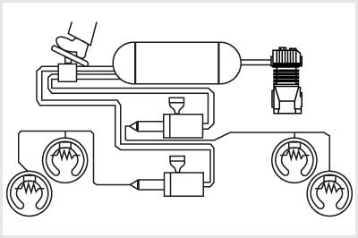
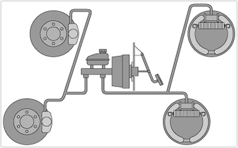
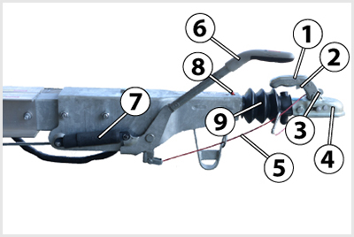

- 292. Az ábrán bemutatott légfékberendezés... #704442
- kétkörös.
- egykörös.
- háromkörös.
- 293. Befolyásolja-e a járművekre előírt fékezési követelményeket a jármű terhelési állapota? #704465
- Nem.
- Igen, a teljes terhelésű járművek esetében a követelmények enyhébbek.
- Igen, a teljes terhelésű járművek esetében a követelmények szigorúbbak.
- Igen, a részterhelésű járművek esetében a követelmények enyhébbek.
- 294. A megfelelően működő légfékberendezés működési késedelme nem lehet nagyobb, mint... #704482
- 0,6 s.
- 0,2 s.
- 1 s.
- 2 s.

- 295. Melyik fékberendezés rendszervázlata ismerhető fel az ábrán? #704491
- A kétkörös, kombinált, sűrített levegővel működtetett hidraulikus fékrendszeré.
- A kétkörös légfékrendszeré.
- A kétkörös hidraulikus fékrendszeré.
- A sűrített levegős rásegítésű kétkörös hidraulikus fékrendszeré.

- 296. Milyen kialakítású fékberendezés ismerhető fel az ábrán? #704512
- Kétkörös, hidraulikus fékrendszer, elöl tárcsa-, hátul dobfékekkel.
- Egykörös, hidraulikus fékrendszer, elöl-hátul dobfékekkel.
- Kétkörös, hidraulikus fékrendszer, elöl-hátul tárcsafékekkel.
- Kétkörös, hidraulikus fékrendszer, elöl-hátul dobfékekkel.
- 297. Mekkora késedelemmel működik a hidraulikus fékberendezés? #704526
- Kb. 0,2 s.
- Kb. 0,5 s.
- Kb. 0,8 s.
- Kb. 1-1,15 s.
- 298. Miért építik a korszerű haszongépjárművek légfékberendezését két üzemifék-körös kivitelben? #704533
- Mert ha az egyik fékkör meghibásodik, akkor a másikkal a gépjármű még fékezhető marad.
- Mert így az egyik fékkörrel a vontató, a másikkal a pótkocsi kerékfékei működtethetők.
- Mert így az első és hátsó tengelyeken különböző fékerők valósíthatók meg.
- Mert így az üzemi és a rögzítőfék rendszer függetleníthető egymástól.

- 299. A képen látható vonószerkezet egy... #704681
- mechanikus ráfutófékes pótkocsihoz tartozik.
- hidraulikus ráfutófékes pótkocsihoz tartozik.
- fék nélküli pótkcsihoz tartozik.
- átmenő légfékes pótkocsihoz tartozik.
- 300. Mi a mechanikus ráfutófék előnye? #704718
- A szerkezet egyszerű, és a vontatóval történő összekapcsolás után azonnal működőképes állapotban van.
- A vontatóval azonos lefékezettséget biztosít a pótkocsi számára.
- Kevés mozgó alkatrész van benne, ezért gyakorlatilag gondozásmentes.
- Alkalmazásával elérhető, hogy a pótkocsi fékberendezése a vontatóéval egyszerre lépjen működésbe.
- 301. Vontathat-e gépjármű 3,5 tonnánál nagyobb össztömegű hidraulikus ráfutófékkel ellátott pótkocsit? #704721
- Nem.
- Igen.
- 302. Milyen pótkocsikat lehet üzemi és rögzítő fék nélkül forgalomba helyezni? #704730
- Egytengelyes, vagy legfeljebb 1 méter tengelytávolságú, nem kormányozott kerekű kéttengelyes könnyű (750 kg megengedett össztömeget meg nem haladó) pótkocsikat.
- Azokat a pótkocsikat, melyek esetén a járműszerelvényre előírt fékhatásosság csak a vontató fékrendszereivel is teljesíthető.
- Egytengelyes pótkocsikat.
- A 3500 kg megengedett össztömeget nem meghaladó félpótkocsikat.
- 303. A mechanikus ráfutófékkel ellátott pótkocsi milyen erőt használ az üzemi fék vezérlésére és működtetésére? #704840
- A saját tömegére ható tehetetlenségi erőt.
- Egy előfeszített rugóerőt.
- A vonójármű hidraulikus rendszerében beállíott nyomással előállított erőt.
- A vonójármű felől érkező sűrített levegő által kifejtett erőt.
- 304. Mi működteti a pótkocsin található főfékhengert a hidraulikus ráfutófékek esetén? #704854
- A vonófejben fékezéskor hátrafelé mozduló tolórúd.
- A fékvezetéken keresztül a vontatóról érkező sűrített levegő.
- A vontató főfékhengerében előállított folyadéknyomás.
- Egy elektromágnes, amely a gerjesztőáramát a vontatóról kapja.
- 305. Milyen legyen az üzemi fékrendszer fékhatása? #704863
- A fékhatásnak a kétoldali kerekeken megközelítőleg azonosnak kell lennie.
- A fékhatásnak minden keréken azonosnak kell lennie.
- A fékhatásnak minden tengelyen azonosnak kell lennie.
- A fékhatásnak a kormányzott kerekeken kell a legkisebbnek, a hajtott kerekeken pedig a legnagyobbnak lennie
- 306. Milyen fékrendszerrel kell ellátni a gépkocsikat? #704864
- Üzemi-, biztonsági- és rögzítő fékrendszerrel.
- Üzemi-, biztonsági- és tartósfék fékrendszerrel.
- Üzemi- és rögzítő fékrendszerrel.
- Üzemi-, rögzítő- és tartósfék fékrendszerrel.
- 307. Milyen célt szolgál a gépjárművön (esetleg pótkocsin) alkalmazott tartósfék (lassítófék)? #704865
- Lehetővé teszi a járműnek hosszú lejtőn történő tartós, vagy gyakori fékezését a kerékfékszerkezetek túlmelegedése és kopása nélkül.
- Az üzemi fék meghibásodása esetén lehetővé teszi a jármű lassítását és megállítását.
- Megnöveli az üzemi fék fékhatását, mivel azzal párhuzamosan működtethető.
- Ezzel végzik a jármű rögzítőfékezését, de lassításra is használható.
- 308. Mi az EBS (elektronikus fékrendszer) jellemzője? #704867
- Elektronikusan vezérelt légfékrendszer számos kiegészítő funkcióval.
- Blokkolásgátlóval ellátott légfékrendszer.
- Elektronikus, terhelésfüggő fékerőszabályozóval ellátott légfékrendszer.
- Blokkolásgátlóval és kipörgésgátlóval ellátott fékrendszer.
- 309. A pótkocsi üzemi fékrendszerének... #704898
- a jármű összes kerekét fékeznie kell.
- legalább az első két kereket fékeznie kell.
- legalább a két hátsó kereket fékeznie kell.
- legalább egy tengely összes kerekét fékeznie kell.
- 310. Milyen fékezést kell az előírások szerint minden esetben, kötelezően lehetővé tenniük a gépjármű fékberendezéseinek? #714591
- Üzemi, rögzítő és biztonsági fékezést.
- Üzemi, tartós és biztonsági fékezést.
- Üzemi, biztonsági és motorfékezést.
- Rögzítő, biztonsági és motorfékezést.
- 311. Milyen fékrendszer látható az alábbi rajzon? #714592
- Kétkörös, hidraulikus fékrendszer.
- Alacsony nyomású kétkörös légfékrendszer.
- Hidraulikus fékrendszer sűrített levegős rásegítéssel.
- Sűrített levegő működtetésű hidraulikus fékrendszer.
- 312. Milyen fékrendszer látható az alábbi rajzon? #714593
- Kétkörös légfékrendszer.
- Kétkörös hidraulikus fékrendszer vákuumos rásegítéssel.
- Kétkörös hidraulilkus fékrendszer magasnyomású levegőrásegítéssel.
- Kétkörös hidraulikus fékrendszer sűrített levegő működtetéssel.
- 313. A rajzon látható fékrendszer... #714594
- kombinált, sűrített levegő működtetésű hidraulikus fékrendszer.
- magasnyomású kétkörös légfékrendszer.
- hidraulikus fékrendszer vákuumos rásegítéssel.
- magasnyomású kétkörös hidraulikus fékrendszer.
- 314. Az üzemi fékberendezés akkor megfelelő, ... #721161
- ha a fékhatás egy tengely kétoldali kerekein közel azonos, és a jármű fékezés közben nem tér el a menetiránytól.
- ha minden keréken teljesen megegyező fékhatást fejt ki.
- ha a fékhatás a mellső kerekeken legalább kétszer akkora, mint a hátsókon.
- ha minden tengelyen teljesen megegyező fékhatást fejt ki.